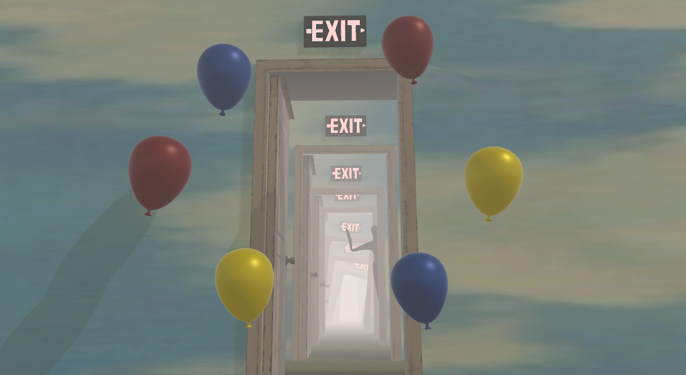
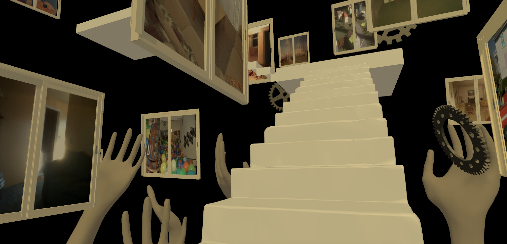
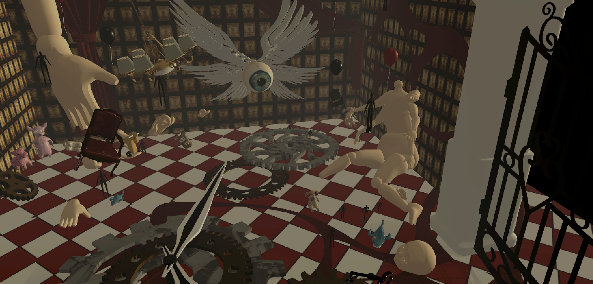
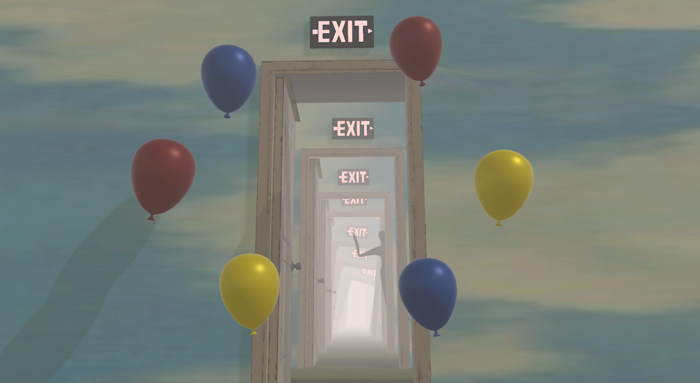
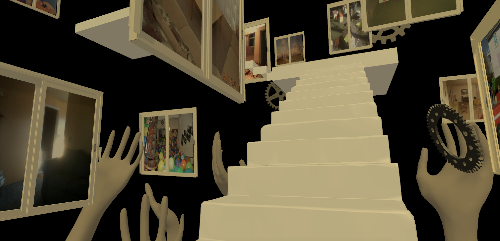
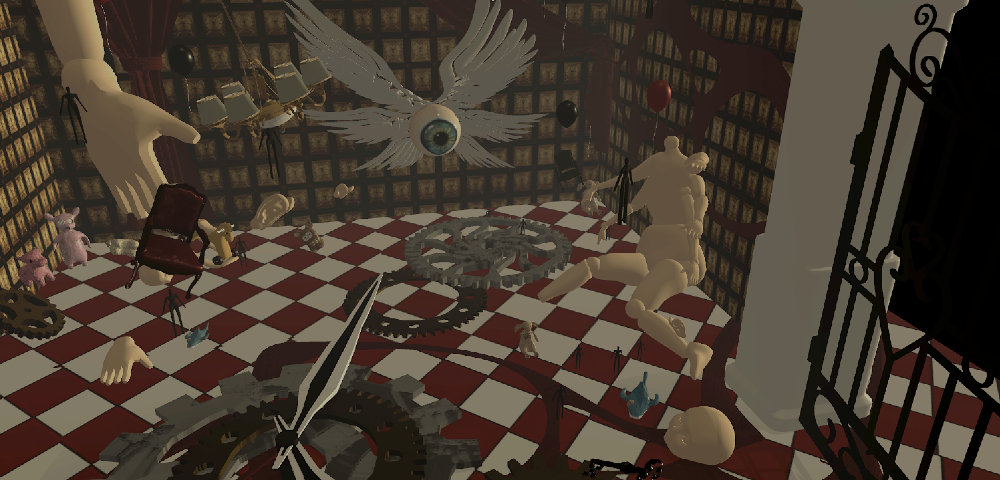

DREAMSHADE
"Dream Shadows" is a weirdcore style horror themed game that takes you back to the scenes of your childhood to re-experience important childhood scenarios in the present state of mind. The immersive feeling is created through interactive audio. Users will follow the dark shadow's guidance on a journey down memory lane, exploring step-by-step to the final scene and repairing childhood scars by fixing their childhood dolls.
“梦影 "是一款怪核风格的恐怖主题游戏，它能带你回到童年的场景中，以现在的心态重新体验童年的重要场景。这种身临其境的感觉是通过互动音频创造出来的。用户将跟随黑影的指引踏上回忆之旅，一步步探索到最终场景，并通过修复童年玩偶来修复童年的伤疤。
这款游戏由Unity制作，共有7个游戏场景，通关方法是与npc对话，通关对话中的线索寻找钥匙，最终逃离梦境。
 




